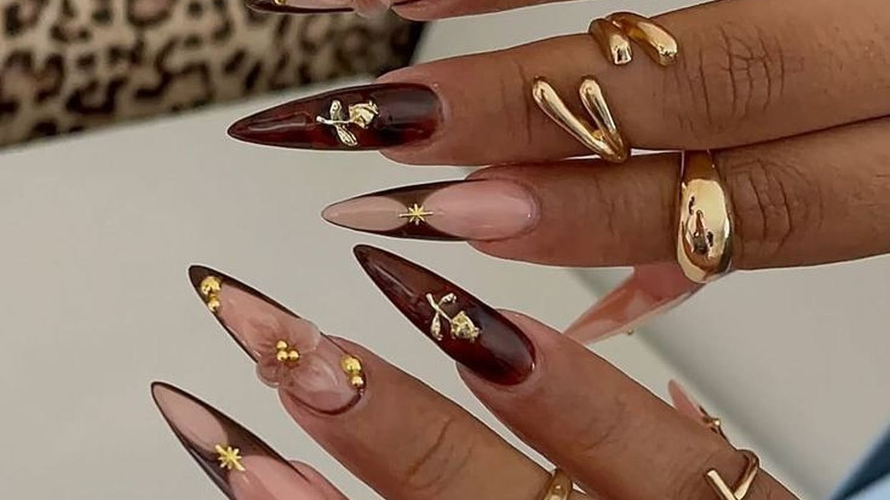
ReferenciaHOT LOOK · Uñas y pestañas
Estrategia.
Capacitación.
Producción profesional de contenido.
Administrar una cuenta es ejecutar. Acá se decide qué conviene comunicar, se enseña a sostenerlo y se produce cada pieza.
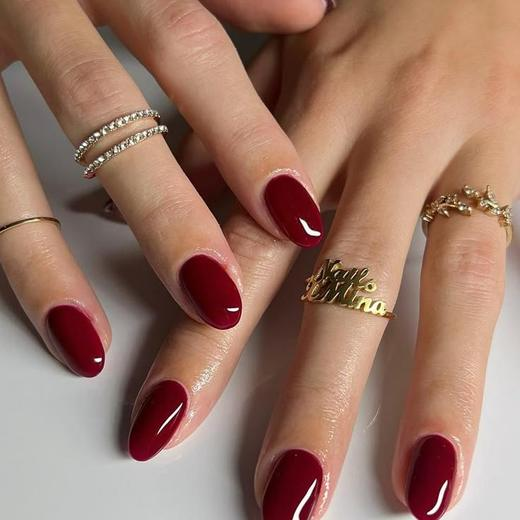
Eje del mes, servicio a priorizar y acciones comerciales.
Nueve módulos aplicados sobre la cuenta real.
Calendario con copy, acción y objetivo comercial.
Diseño, edición y animación con herramientas Adobe.
Configuración, segmentación y lectura de campañas.
Reporte mensual y ajuste del plan en curso.
| Días 1–3 | Diagnóstico — cuenta, agenda anterior y servicios con más margen. |
| Días 3–5 | Planificación — calendario propuesto y aprobado. |
| Días 5–7 | Producción — sesión en el local y edición del paquete. |
| Día 15 | Revisión — qué rindió y qué se corrige. |
| Días 25–30 | Cierre — reactivación y reserva anticipada. |
| Día 30 | Reporte — métricas y plan del mes siguiente. |
Sin resultados garantizados. Comprometemos método, entregables y plazos. No prometemos cantidad de ventas, seguidores ni consultas.
Nueve módulos sobre la cuenta real. Abrí el que te interese; las tareas quedan marcadas.
Que en diez segundos se entienda qué hacés y cómo reservar.
El público se define por zona y frecuencia, no solo por edad.
Las consultas se pierden por falta de información, no por precio.
Cinco fórmulas cubren el mes sin quedarse sin ideas.
Si no sabemos qué queremos que haga la persona, la pieza no entra al calendario.
Las historias son el canal de la agenda, no el del diseño.
Tres a cinco por día hábil. Constancia antes que volumen.
Cada herramienta con un uso comercial concreto.
| Encuestas | Decidir qué servicio empujar. |
| Caja de preguntas | Juntar objeciones reales. |
| Cuenta regresiva | Promos con fecha de cierre. |
| Enlace en historia | Llevar al WhatsApp. |
| Colaboraciones | Compartir alcance con clientas y vecinos. |
| Programación | Dejar el feed del mes cargado. |
Las métricas que importan son las que anticipan una consulta.
| Métrica | Qué hacer con eso |
|---|---|
| Alcance | Si cae, revisar formato y horario. |
| Guardados y compartidos | Pesan más que los likes. |
| Visitas al perfil | La antesala de la consulta: la métrica del mes. |
| Toques en el enlace | Si hay visitas y no toques, el perfil no cierra. |
| Retención en reels | Si cae antes de 3 segundos, el problema es el inicio. |
Tres preguntas al mes: ¿llegamos a más gente?, ¿entró al perfil?, ¿escribió?
Repetir lo que rinde en vez de improvisar cada mes.
Acá se pierde la mayor parte del trabajo del mes.
La predisposición a comprar cambia según la semana y el cobro.
Más liquidez y agenda libre. Se busca entrar en consideración: que la zona sepa que el local existe.
Ya vieron la cuenta. Ahora hay que sacar la duda: si dura, si daña, si vale lo que cuesta.
Menos liquidez: no se pelea público nuevo. Reactivar a una clienta de hace 45 días cuesta mucho menos.
Criterio transversal: uñas y pestañas no son necesidad básica. Hay que elegir el momento de mayor predisposición y construir ahí el motivo de compra.
Tocá un día para ver idea, copy, acción y objetivo. La barra indica quién produce.
Ocho pasos, sin dar nada por sabido. La inversión publicitaria se presupuesta aparte.
Tres niveles. Entenderlos resuelve el 80% de las dudas.
| Campaña | El objetivo: qué queremos que pase. |
| Conjunto | A quién, dónde, cuánto por día y en qué fechas. |
| Anuncio | La pieza, el texto y el botón. |
El botón "Promocionar" de Instagram es la versión simplificada: sirve para empezar.
La cuenta y el pago quedan a nombre del negocio. Trabajamos con acceso de socio.
Meta optimiza exactamente por lo que uno le pide.
| Objetivo | Cuándo usarlo | Qué medir |
|---|---|---|
| Reconocimiento | Apertura o cambio de dirección. | Alcance |
| Tráfico | Llevar a WhatsApp o a reservas online. | Costo por clic |
| Interacción | Impulsar un reel que ya rinde. | Costo por interacción |
| Clientes potenciales | El principal acá: generar mensajes. | Costo por conversación |
| Ventas | Solo con venta o reserva online. | Costo por compra |
En un local de barrio, la ubicación es lo que más pesa.
Prueba del primer mes: dos conjuntos iguales cambiando solo el público. A los 7 días se apaga el peor. El monto lo define el negocio: no sirve generar más consultas de las que se pueden atender.
| Costo por resultado | Comparar contra lo que vale un turno. |
| CTR bajo | El problema es la pieza, no el público. |
| Frecuencia > 3 | Público saturado: ampliar o cambiar pieza. |
| Conversaciones | Cruzar con cuántas terminaron en turno. |
Gastos al aire: prender y apagar todos los días, públicos chicos por exceso de intereses, dejar correr sin revisar, publicitar sin tener quién responda los mensajes.
Cómo se factura: los USD 400 cubren configuración, optimización y lectura. La inversión se paga a Meta desde la cuenta del negocio y se presupuesta aparte.
Cada pieza con objetivo comercial y justificación estratégica.
| Diseños de feed | 12 |
| Reels editados | 6 |
| Piezas de historias | 24 |
| Piezas para campañas | 4 |
| Sesión en el local | 1 |
| Reuniones | 2 |
| Reporte de métricas | 1 |
Si no define qué tiene que lograr, no se produce.
Paleta, tipografía y color iguales en toda la galería.
Vertical, legible sin sonido, resultado en los primeros segundos.
hot look
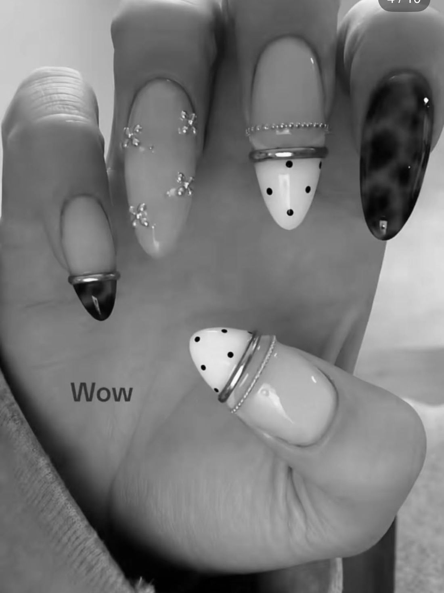
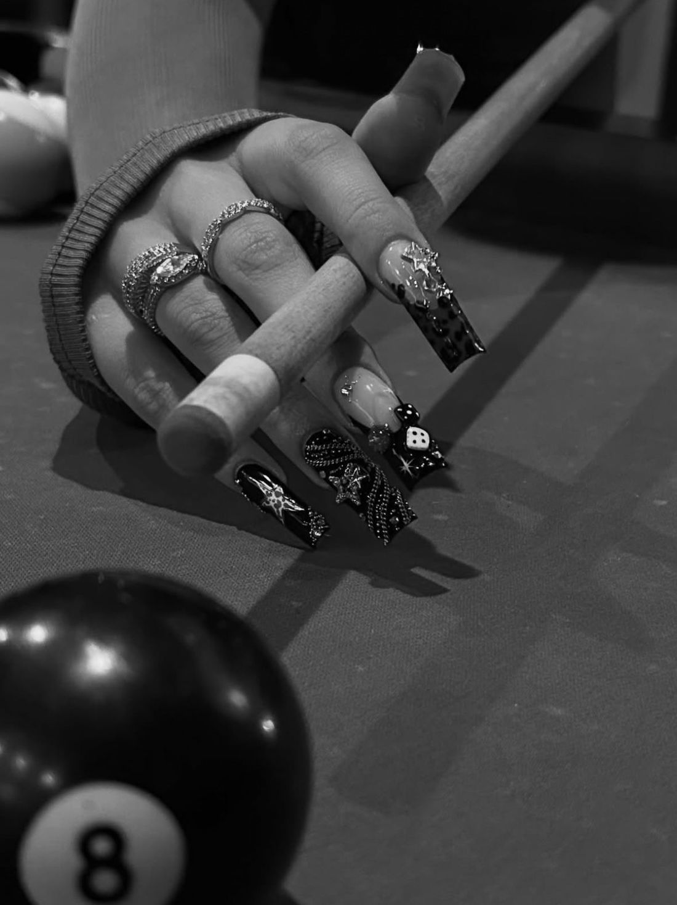
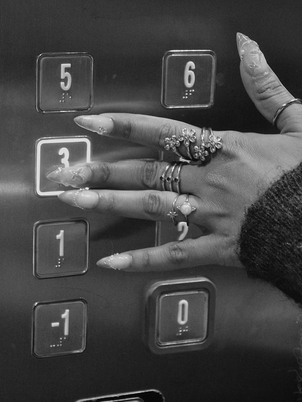
Se compra por imagen, por mantenimiento y por confianza. Nunca por urgencia.
| Cobro y quincena | Apertura de agenda. |
| Jueves a sábado | Recordatorio de disponibilidad. |
| Eventos | Reserva anticipada. |
| Fechas del calendario | Campaña puntual. |
| Día 21 al 28 | Mensaje directo de retoque. |
Tomada del logo y de las publicaciones de la cuenta. Es la paleta de toda esta presentación.
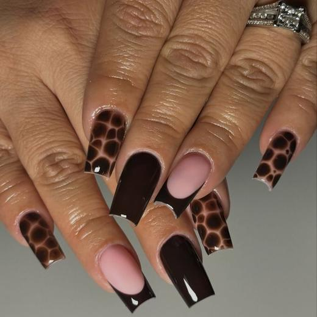
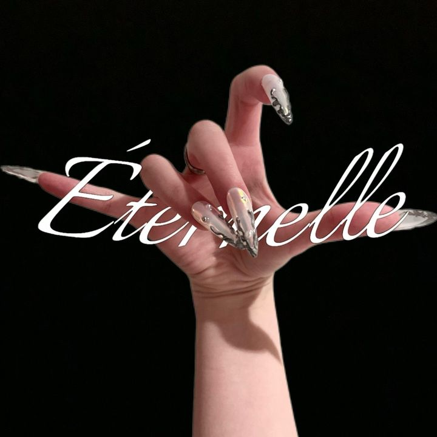
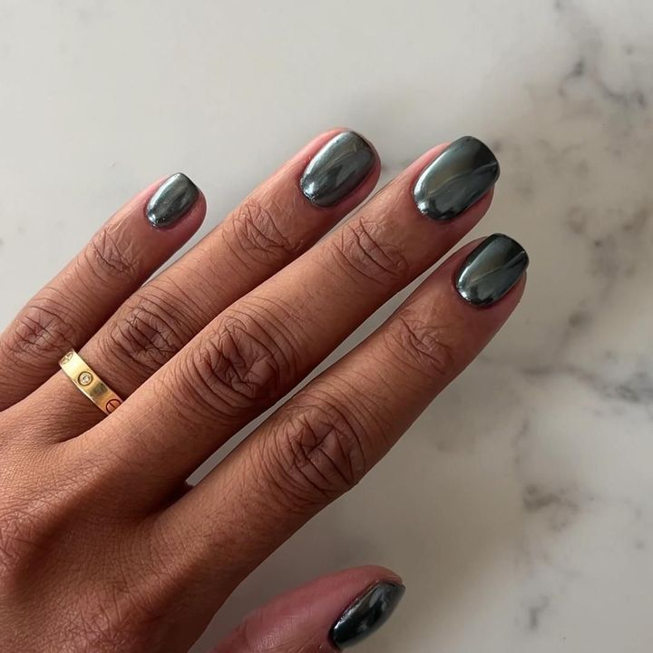
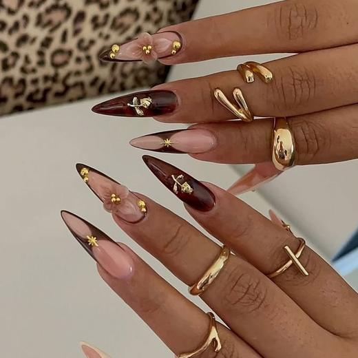
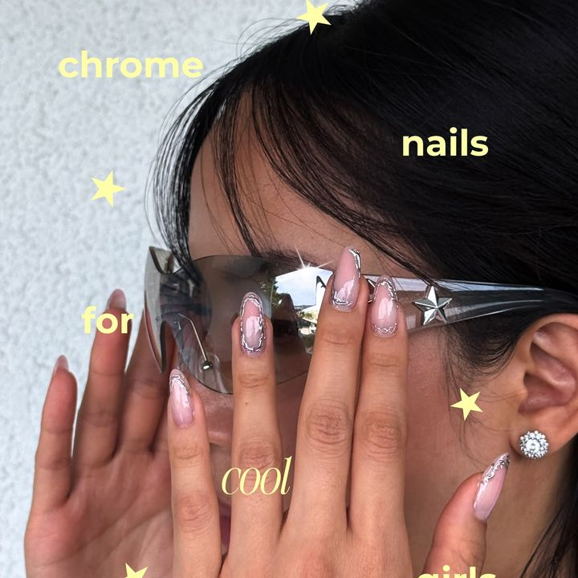
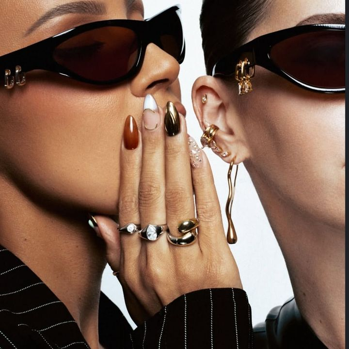
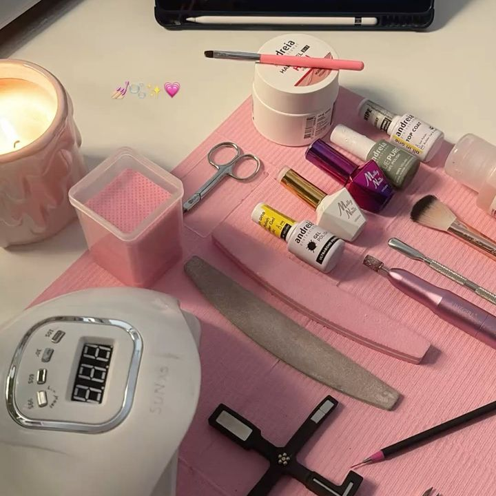
Tablero de Pinterest del cliente: define el estilo fotográfico y los encuadres. No son trabajos de HOT LOOK.
Estrategia, capacitación, planificación, producción, campañas y reporte. No incluye la inversión en Meta Ads, que se presupuesta aparte y se paga a Meta desde la cuenta del negocio.
| Frente | Incluye | Frecuencia |
|---|---|---|
| 1 · Acompañamiento | Eje del mes, servicio prioritario y acciones comerciales. | Apertura + revisión |
| 2 · Capacitación | Los nueve módulos sobre la cuenta real. | Permanente |
| 3 · Planificación | Calendario con copys, acciones y reparto de producción. | Mensual, aprobado antes |
| 4 · Producción | 42 piezas más la sesión de registro en el local. | Mensual |
| 5 · Meta Ads | Configuración, segmentación, piezas y optimización. | Hasta 2 campañas |
| 6 · Seguimiento | Reporte, conclusiones y plan del mes siguiente. | Mensual |
Todo se puede cotizar por separado.
| Días 1–2 | Diagnóstico, accesos, precios y capacidad de agenda. |
| Día 3 | Reunión estratégica. |
| Día 4 | Sesión de registro en el local. |
| Días 5–6 | Calendario aprobado y primeras piezas. |
| Día 7 | Perfil optimizado y arranque de publicaciones. |
| Día 10 | Primera campaña configurada. |
Sobre expectativas: no trabajamos con resultados garantizados. El contenido y la publicidad generan oportunidades; el cierre depende también del precio, la atención y la agenda. Asumimos método, entregables, plazos y lectura honesta de los números.